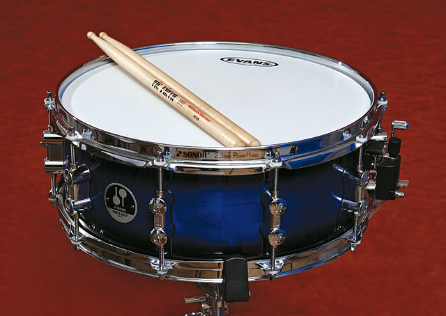
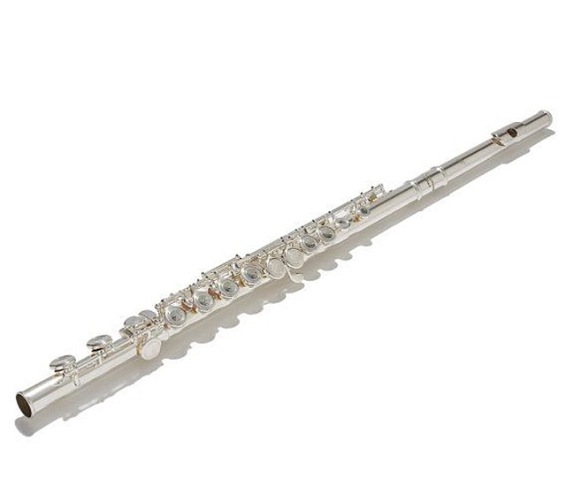
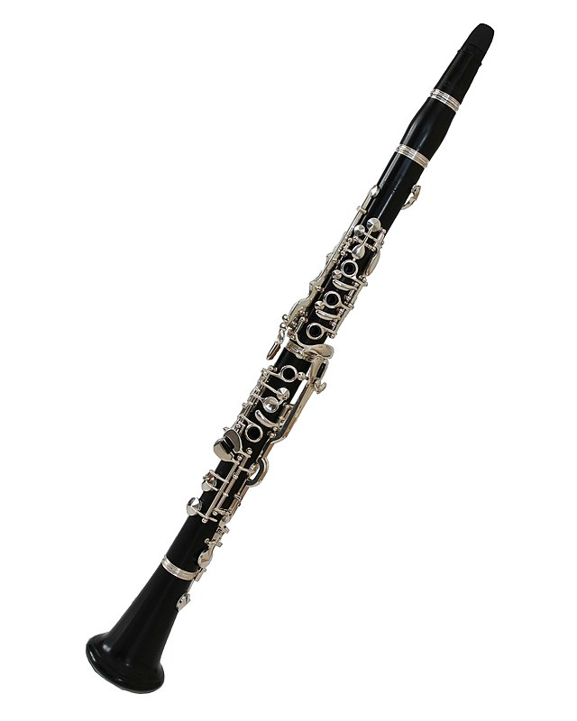

Identidad sonora
Seguimos escuchando "Bolero".
El primer instrumento musical que aparece en la audición es un redoblante (tambor) quién comienza a realizar un ritmo constante.
¡Este ritmo se repite en la obra completa 169 veces!
Pero, ¿qué es el ritmo? El ritmo se refiere a como se organizan las duraciones (los sonidos cortos o largos) en el tiempo.

Luego se incorpora la flauta traversa que realiza la melodía.
Cuando nos referimos a una melodía hablamos de mover el sonido a distntas alturas (agudas o graves).
Una melodía es una sucesión de sonidos con variación del alturas y duraciones del sonido (sonidos cortos o largos).

Cuando termina la flauta traversa la melodía se repite pero en esta oportunidad con otro instrumento musical.
¿Conoces este instrumento musical?

Este instrumento realiza la misma melodía, o sea los mismos sonidos que la flauta traversa en altura y duración.
Sin embargo tiene otro sonido característico que lo identifica y diferencia de la flauta traversa en este caso.
La cualidad del sonido que nos permite identificar el sonido por sus características propias y por cómo se manifiesta, es el timbre.
Cuando algún familiar te llama para hacer una tarea, identificas quién es ese familiar aunque no lo veas. Conoces su voz y sus características ( si es grave , aguda, fuerte, suave, clara u oscura). Su voz tiene un color único que permite que lo distingas al instante. Lo mismo sucede con un instrumento musical. Si un piano, una guitarra y una flauta tocan la misma nota musical (altura) y la misma intensidad, es en el elemento tímbrico donde aparece la identidad de cada sonido. Así puedo distinguir de que sonido se trata.
Todos los sonidos tienen características propias que lo definen. El color del sonido está determinado por la altura, la intensidad, la espacialidad y la duración. Todos esos aspectos definen al timbre.
Escucha los audios a continuación e intenta descubrir de qué emisor se trata:
Para Murray Schafer el timbre es el "colorido tonal", "el timbre otorga a la música el color del individualismo."
La asociación de color con la cualidad timbre nos ayuda a entender como incorporar vida y variedad a nuestras músicas.
Cada sonido hablado tiene un timbre diferente, esto se debe a que nuestro sistema corporal se mueve constantemente y los sonidos emitidos cambian sus resonancias en el cuerpo así como las demás cualidades.
Tambíen podemos jugar y cambiar nuestro timbre de voz voluntariamente.
Los instrumentos musicales también pueden cambiar sus timbres, es decir sus posibilidades sonoras. Esto depende de muchos factores, como por ejemplo la forma de soplo en una flauta, la forma de pulsación de una cuerda en la guitarra, la mano que percute una membrana de un tambor.
Escucha esta versión de "Bolero" y descubre que timbres reconoces:
Angélique Kidjo es una cantante y compositora originaria de Benín (África) , aquí realiza una versión "Bolero" (Lonlon Ravels Bolero), de su album Djin Djin. Escucha que timbres utiliza.
Otra versión para investigar diferentes timbres, en este caso el artista de rock Frank Zappa.